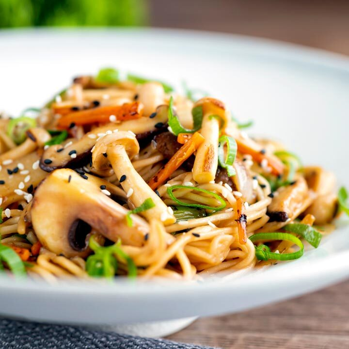

Home
Lo Mein

Description
Hi everyone!
This is the perfect recipe for when you're craving for something tasty but don't want to spend too much time cooking!
I am going to guide you through the making of this simple yet tasty Asian recipe, consisting of noodles, mushrooms, some veggies and a delicious mix of soy sauce, hoisin sauce and maple syrup. Mlml!
Ingredients
- Noodles x 175 gr
- Mushrooms x 400 gr
- Cloves of garlic x 3
- Carrot x 1
- Cabbage x 1/4
For the sauce:
- Dark soy sauce x 4 Tbsp
- Hoisin sauce x 2 Tbsp
- Maple syrup x 1 Tbsp
For the topping (optional):
- Spring onion x 1
- Sesame seeds
Steps
- Fry the mushrooms in oil until browned, adding a splash of soy sauce.
- Chop the garlic, the carrot and the cabbage and add to the pan. Fry until softened.
- Chop the spring onion (optional).
- In a bowl, mix the soy sauce, the hoisin sauce and the maple syrup. Add to the pan.
- Add the noodles to the pan and stir fry for a few minutes.
- Sprinkle the spring onion and the sesame seeds (optional).
- Enjoy!